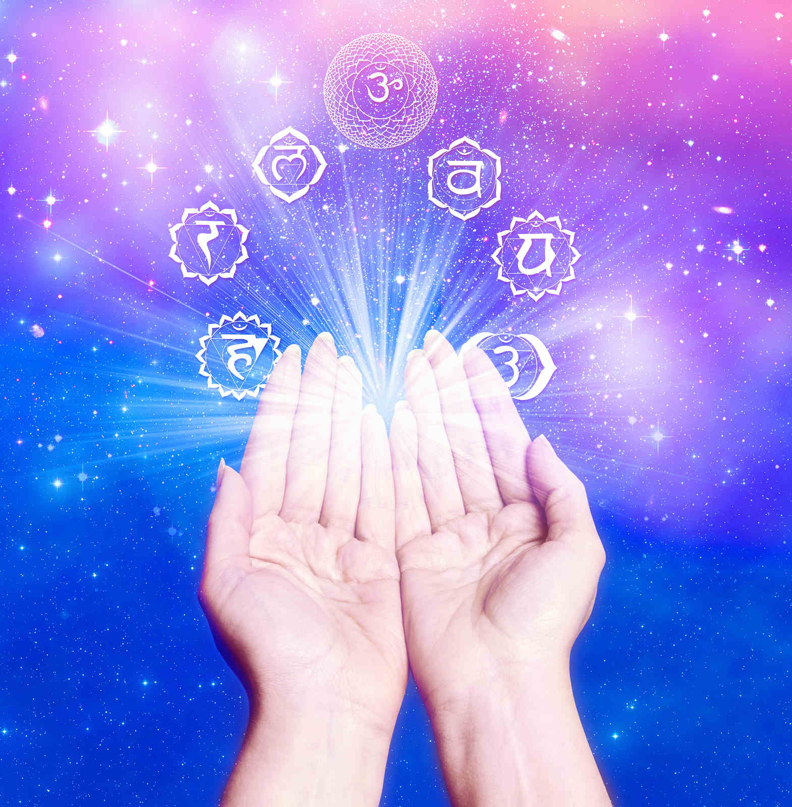

Reiki is a Japanese word and denotes the Energy of the Universe
Reiki is not your body energy. It is the Unlimited Energy of the Universe. This Energy is very intelligent and it reaches where it is required, in right quantity. You become a channel of Reiki after your Reiki attunement. Reiki has been used by saints since thousands of years and was popularized by SensaiMikaoUsui in the 19th century.
Reiki Level 1
Is the first step to open up your Reiki path. Right upon the first attunement, you can immediately start applying Reiki to yourself, others, animals, plants, and everything around you to gently harmonize the vibration. In this class, you will learn the history and principles of Reiki, basic hand positions for treating yourself and others.
Reiki Level 2
Will include the use of three Reiki symbols (the symbol of enhancing power,the symbol of harmony and the symbol of beyond time and space). Students will learn distance healing, healing towards past (Clearing past trauma; clearing karma) and healing towards future (Setting up desirable self image or situations). These skills allow you to more effectively deal with certain problems and situations.
Reiki Level 3
Training is the highest level of energy in the Reiki tradition. At this level, students will become more connected and resonated with consciousness in the higher dimension. One attunement will be performed and the fourth symbol and mantra will be given.
Karuna Reiki Level 3A
Karuna is a Sanskrit word that is translated to mean any action that is taken to diminish the suffering of others, “Compassionate Action.” Liberation from individual consciousness results in knowing All Beings as ONE. Therefore, in the practices of Reiki, Yoga, Buddhism, Christianity, Judaism, Zen, etc. it becomes natural to extend “Compassionate Action” to All Beings and All things without distinction. When an individual heals, All benefit. Karuna is the motivating quality of Beings who are working to end suffering on Earth. As you attune and develop Karuna Reiki in yourself you become more receptive to the Divine Grace and healing energies. Karuna is the same system taught in traditional Reiki, however it is new. New symbols, new name, and new focus for the New Earth.
Reiki Master Level 4
Reiki Masters get the opportunity to do a lot of healing. With experience and from the sharing of the best healers of the world we know that the more we let Reiki do the healing the faster and better healing occurs. When we are a pure channel and there are is noting in the way of the healing, including our desires, intentions, etc. and we just surrender to the Reiki energy, the highest healing takes place. When we are not doing anything, healing happens. Reiki is a tool of healing and enlightenment, and as a Reiki Master/Teacher, you will continue to
help spread the energy throughout the world through your teachings and attunements. Living
as a kind, generous, compassionate, and loving person with a genuine desire to help others will serve you well as you share Reiki energy with others.
The Reiki Benefits
- Balances the body’s energy
- Energizes glands, organs and balances bodily functions
- Strengthens the immune system and energizes your body, mind and spirit
- Frees blocked emotions / energy and increases creativity and awareness
- Increases serotonin and endorphin
- Relaxes you physically and mentally and releases toxins and impurities
- Activates body’s natural abilities to heal itself

Reiki, Frequently asked Questions & Answers
What is Reiki ?
Reiki is a Japanese technique for stress reduction and relaxation that also promotes healing. It is administered by "laying on hands" and is based on the idea that an unseen "life force energy" flows through us and is what causes us to be alive. If one's "life force energy" is low, then we are more likely to get sick or feel stress, and if it is high, we are more capable of being happy and healthy.
The word Reiki is made of two Japanese words - Rei which means "God's Wisdom or the Higher Power" and Ki which is "life force energy". So Reiki is actually "spiritually guided life force energy."
A treatment feels like a wonderful glowing radiance that flows through and around you. Reiki treats the whole person including body, emotions, mind and spirit creating many beneficial effects that include relaxation and feelings of peace, security and wellbeing. Many have reported miraculous results.
Reiki is a simple, natural and safe method of spiritual healing and self-improvement that everyone can use. It has been effective in helping virtually every known illness and malady and always creates a beneficial effect. It also works in conjunction with all other medical or therapeutic techniques to relieve side effects and promote recovery.
An amazingly simple technique to learn, the ability to use Reiki is not taught in the usual sense, but is transferred to the student during a Reiki class. This ability is passed on during an "attunement" given by a Reiki master and allows the student to tap into an unlimited supply of "life force energy" to improve one's health and enhance the quality of life.
How Does Reiki Work?
We are alive because life force is flowing through us. Life force flows within the physical body though pathways called chakras, meridians and nadis. It also flows around us in a field of energy called the aura. Life force nourishes the organs and cells of the body, supporting them in their vital functions. When this flow of life force is disrupted, it causes diminished function in one or more of the organs and tissues of the physical body.
The life force is responsive to thoughts and feelings. It becomes disrupted when we accept, either consciously or unconsciously, negative thoughts or feelings about ourselves. These negative thoughts and feelings attach themselves to the energy field and cause a disruption in the flow of life force. This diminishes the vital function of the organs and cells of the physical body.
Reiki heals by flowing through the affected parts of the energy field and charging them with positive energy. It raises the vibratory level of the energy field in and around the physical body where the negative thoughts and feelings are attached. This causes the negative energy to break apart and fall away. In so doing, Reiki clears, straightens and heals the energy pathways, thus allowing the life force to flow in a healthy and natural way.
Do All Healers Use Reiki?
All healers use life force or Ki, but not all use Reiki. Reiki is a special kind of life force that can only be channeled by someone that has been attuned to it. It is possible that some people are born with Reiki or have gotten it some other way. However, most healers who have not received the Reiki attunement from a Reiki Master are not using Reiki but another kind of life force. People who already do healing work consistently report an increase of at least fifty percent in the strength of their healing energies after taking the Reiki training.
This was verified for me when I first began teaching Reiki. There were two clairvoyant healers I knew who had highly developed abilities. They could easily see the life force flowing through a person's body, as well as see the aura and chakras. They could also communicate with a person's guides and Higher Self. They were adept at moving negative psychic energy out of the body as well as channeling healing energies. In my twenty years of metaphysical work, they were the most accurate and effective psychic healers I had met.
They told me later they had doubted there was anything I was teaching they couldn't already do, but that they took the Reiki training anyway, simply to support me in my new work. After the attunement, they were amazed at the difference they could feel between the healing energies they had been using and Reiki. They said the Reiki energies were more powerful and of a much higher frequency. They noted also that Reiki didn't have to be guided like the other healing energies they were using, and that the Reiki energies began flowing without having to enter an altered state. They also indicated the attunement process itself was a powerful healing experience, releasing restrictions relating to their healing work they had unknowingly acquired when they were healers in past lives. They were very pleased they had taken the class.
Can Reiki Cause Harm?
Never, Because Reiki is guided by the God-consciousness, it can never do harm. It always knows what a person needs and will adjust itself to create the effect that is appropriate for them. One never need worry about whether to give Reiki or not. It is always helpful.
In addition, because the practitioner does not direct the healing and does not decide what to work on, or what to heal, the practitioner is not in danger of taking on the karma of the client. Because the practitioner is not doing the healing, it is also much easier for the ego to stay out of the way and allow the presence of God to clearly shine through.
Whether our energy is used or Depleted?
Never, Because it is a channeled healing, the Reiki practitioner's energies are never depleted. In fact, the Reiki consciousness considers both practitioner and client to be in need of healing, so both receive treatment. Because of this, giving a treatment always increases one's energy and leaves one surrounded with loving feelings of well-being.
Where does Reiki energy come from?
Reiki energy is a subtle energy. It is different than electricity or chemical energy or other kinds of physical energy. Reiki energy comes from the Higher Power, which exists on a higher dimension than the physical world we are familiar with. When viewed clairvoyantly, Reiki energy appears to come down from above and to enter the top of the practitioners head after which if flows through the body and out the hands. It appears to flow this way because of our perspective. However, the true source of Reiki energy is within ourselves. This does not mean that we use our personal energy when we do Reiki, but that the energy is coming from a transcendental part of ourselves that is connected to an infinite supply of healing energy.
Is Reiki a Religion?
Although Reiki energy is spiritual in nature, Reiki is not a religion. Practitioners are not asked to change any religious or spiritual beliefs they may have. They are free to continue believing anything they choose and are encouraged to make their own decisions concerning the nature of their religious practices.
How is a Reiki treatment given?
In a standard treatment Reiki energy flows from the practitioners hands into the client. The client is usually laying on a massage table but treatments can also be given while the client is seated or even standing. The client remains fully clothed. The practitioner places her/his hands on or near the clients body in a series of hand positions. These include positions around the head and shoulders, the stomach, and feet. Other, more specific positions may be used based on the clients needs. Each position is held for three to ten minutes depending on how much Reiki the client needs at each position. The whole treatment usually lasts between 45 and 90 minutes.
What does a Reiki treatment feel like?
What one experiences during a Reiki treatment varies somewhat from person to person. However, feelings of deep relaxation are usually felt by all. In addition, many feel a wonderful glowing radiance that flows through and surrounds them. As the Reiki energy encourages one to let go of all tension, anxiety, fear or other negative feelings a state of peace and well-being is experienced. Some drift off to sleep or report floating outside their bodies or have visions and other mystical experiences. At the end of the treatment, one feels refreshed with a more positive, balanced outlook.
What can be treated with Reiki?
Reiki has had a positive affect on all forms of illness and negative conditions. This includes minor things like head or stomach aches, bee stings, colds, flu, tension and anxiety as well as serious illness like heart disease, cancer, leukemia, etc. The side effects of regular medical treatments have also been reduced or eliminated. This includes the negative effects of chemotherapy, post operative pain and depression as well as improving the healing rate and reducing the time needed to stay in the hospital. Reiki always helps and in some cases people have experienced complete healings which have been confirmed by medical tests before and after the Reiki treatments. However, while some have experienced miracles, they cannot be guaranteed. Stress reduction with some improvement in ones physical and psychological condition are what most experience.
Does one have to stop seeing a regular doctor or psychologist in order to receive a Reiki treatment?
No. Reiki works in conjunction with regular medical or psychological treatment. If one has a medical or psychological condition, it is recommended that one see a licensed health care professional in addition to receiving Reiki treatments. Reiki energy works in harmony with all other forms of healing, including drugs, surgery, psychological care or any other method of alternative care and will improve the results.
Who can learn to do Reiki?
Reiki is a very simple technique to learn and is not dependent on one having any prior experience with healing, meditation or any other kind of training. It has been successfully learned by over one million people from all walks of life, both young an old. The reason it is so easy to learn that it is not taught in the usual way something is taught. The ability to do Reiki is simply transferred from the teacher to the student through a process called an attunement that takes place during a Reiki class. As soon as one receives an attunement, they have the ability to do Reiki and after that whenever one places their hands on themselves or on another person with the intention of doing Reiki, the healing energy will automatically begin flowing.
What is a Reiki attunement?
A Reiki attunement is the process by which a person receives the ability to give Reiki treatments. The attunement is administered by the Reiki Master during the Reiki class. During the attunement, the Reiki Master will touch the students head, shoulders, and hands and use one or more special breathing techniques. The attunement energies will flow through the Reiki Master and into the student. These special energies are guided by the Higher Power and make adjustments in the students energy pathways and connect the student to the source of Reiki. Because the energetic aspect of the attunement is guided by the Higher Power, it adjusts itself to be exactly right for each student. During the attunement, some students feel warmth in the hands, others may see colors or have visions of spiritual beings. However, it is not necessary to have an inner experience for the attunement to have worked. Most simply feel more relaxed.
Can I heal myself?
Yes, once you have received the attunement, you can treat yourself as well as others. This is one of the unique features of Reiki.
I have heard that Reiki can be sent to others at a distance. How does this work?
Yes, in Reiki II, you are given three Reiki symbols. These symbols are empowered by the Reiki II attunement. One of these symbols is for distant healing. By using a picture of the person you would like to send Reiki to or by writing the person’s name on a piece of paper or simply by thinking of the person and also activating the distant symbol, you can send Reiki to them no matter where they are. They could be hundreds of miles away, but it makes no difference. The Reiki energy will go to them and treat them. You can also send Reiki to crisis situations or world leaders and the Reiki energy will help them too.
How many levels are there to the Reiki training?
In the Usui system of Reiki taught by the Center, there are four levels. These include one, two, Advanced and Master.
What does it feel like to give a treatment?
When giving a Reiki treatment, the Reiki energy flows through the practitioner before leaving the hands and flowing into the client. Because of this, the practitioner receives a treatment also. As the Reiki energy flows through the practitioner, she/he will feel more relaxed and uplifted. Spiritual experiences sometimes take place. The practitioner sometimes receives insights about what the client needs to know to heal more deeply.
How do I find a Reiki teacher that is right for me?
Reiki teachers or Masters advertise in many magazines and also post notices at health food stores, new age bookstores and other places. Once you find a Reiki teacher or practitioner you are interested in receiving training or a treatment from, it is a good idea to ask them some important questions. Here are a few that will give you additional information to make a choice.
• How long have you been working with Reiki? What training have you had? How often do you teach? How do you personally use Reiki? What is your lineage?
• What qualifications are required to take Reiki Training?
• What do you cover in your classes? How many hours of class time is included? How much time is instructional, and how much is hands on practice?
• What are the specific things I will be able to do after taking the training?
• What are your fees, and will I get a certificate and a manual?
• Can I take notes and tape record the class?
• How many symbols will I learn?
• Is there a Reiki support group in my area or can you help me establish one?
• Will you openly support me in being a successful Reiki practitioner or Master?
• Do you have a positive respectful attitude toward other Reiki practitioners and Masters regardless of lineage or affiliation?
Be aware of how you feel about their answers and if they are responding in a loving manner that is supportive and empowering. Listen to your heart and you will be guided to the right teacher or practitioner.
Can children learn Reiki?
Yes, Reiki can be taught to anyone. I recommend that a child be old enough to understand what Reiki is and that the child request to receive Reiki.
Is it safe for pregnant woman?
Since Reiki is guided by the Higher Power, the Reiki energy will know the condition of the client or student and adjust appropriately. Reiki can only do good. Many pregnant women have received treatments with great benefit to them and their unborn child. It has also been used during child birth. Pregnant women have also taken the Reiki training and received the Reiki attunement with beneficial results.
What about babies?
Babies love Reiki. It is very healthy for them. Do not worry about it being too strong. Reiki automatically adjusts to what the baby needs.
Can I treat animals or plants?
Animals love Reiki too. They seem to have a natural understanding of what Reiki is and its benefits. Once a pet has received a Reiki treatment, they will often let you know that they want more. Plants also respond well to Reiki.
Are there any side effects from a Reiki treatment?
Most of the time a person will feel relaxed and uplifted by a Reiki treatment. However, sometimes a person will have what is called a healing crisis. As a person’s vibration goes up, toxins that have been stored in the body will be released into the blood stream to be filtered by the liver and kidneys and removed from the system. When this happens, sometimes a person can get a headache or stomach ache or feel weak. If this happens, it is a good idea to drink more water, eat lighter meals and get more rest. The body is cleansing as part of the healing process so this is a good sign.
Can it be used to help groups of people or even global crises?
Yes, this is one of the wonderful benefits of Reiki and is why it is such a wonderful technique for the new millennium. It allows individuals and groups to do something positive about the challenging situations we see on the news involving so many people all over the planet. Reiki can be used to reduce suffering and help people any where in the world. On our Reiki web site at www.reiki.org we list major world events to send Reiki to. As more and more people send Reiki to help the world heal, we will move quickly to a world of peace and harmony.
Can you get more than one attunement?
Once you receive a Reiki attunement, it will last your whole life. However, if you get additional attunements for the same level, it will act to refine and strengthen your Reiki energy
{kind=link}
{kind=link}
{kind=link}
{kind=link}